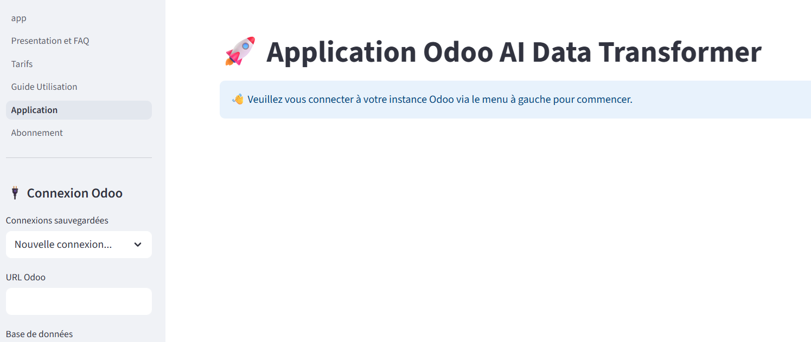
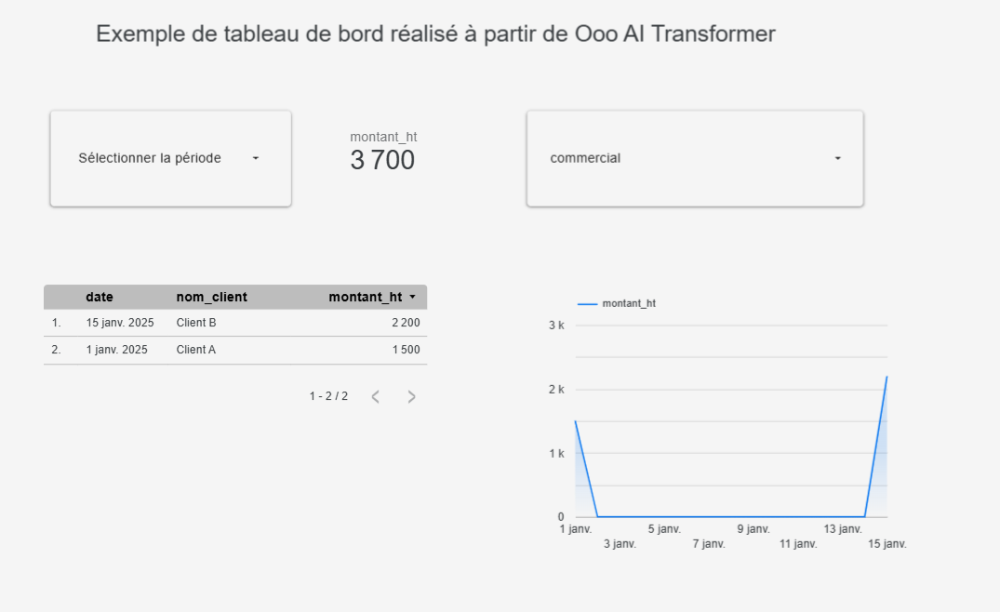

Libérez vos données Odoo. Visualisez-les où vous voulez.
Arrêtez les exports manuels. OdooFlow connecte votre ERP à Google BigQuery, vous permettant de brancher n'importe quel outil de BI pour créer des rapports automatisés.
Commencer l'analyse

De Odoo à votre Dashboard en 3 Étapes
Un processus simple et rapide pour libérer la puissance de vos données.
1
Connectez & Décrivez
Branchez votre base Odoo en toute sécurité et décrivez en français le rapport que vous souhaitez.
2
Générez & Déployez
Notre IA génère le code et les instructions pour déployer votre pipeline sur votre projet Google Cloud.
3
Visualisez !
Connectez votre outil de BI (Tableau, Power BI, etc.) à BigQuery pour construire des rapports percutants.
Compatible avec les outils que vous aimez
Connectez-vous à la plateforme que votre équipe maîtrise déjà.
Prenez des décisions basées sur les faits, pas sur des intuitions.
Une fois votre pipeline en place, vos données Odoo sont mises à jour automatiquement. Explorez-les dans **votre outil de BI favori** pour :
- Suivre vos indicateurs clés en temps réel sans effort manuel.
- Partager des analyses claires et interactives avec vos équipes.
- Piloter votre activité avec précision grâce à des données fiables et à jour.
